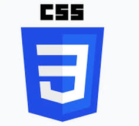

Si el HTML es la estructura de una casa, el CSS (Cascading Style Sheets) es el diseño de interiores, la pintura y la iluminación. Este lenguaje de estilos es lo que transforma un documento de texto plano en una experiencia visual atractiva y profesional. En este texto, exploraremos cómo el CSS permite separar el contenido de la presentación, dándonos el poder de controlar cada píxel de nuestra interfaz.
El CSS es un lenguaje de reglas que indica al navegador cómo debe renderizar los elementos de una página web. A través de selectores, propiedades y valores, podemos modificar desde los colores y tipografías hasta la disposición de elementos complejos mediante sistemas como Flexbox o Grid. Su nombre, "hojas de estilo en cascada", proviene de su jerarquía: las reglas pueden heredarse y combinarse, permitiendo una eficiencia enorme al diseñar sitios a gran escala.
Su verdadera magia reside en la responsividad. Gracias a las Media Queries, el CSS permite que un mismo archivo HTML se vea perfecto tanto en una pantalla de cine como en un teléfono móvil. Es el lenguaje que define la identidad visual de la web moderna, permitiendo que la creatividad no tenga límites técnicos.
Desde mi punto de vista, el CSS es donde realmente ocurre la transformación estética. Es fascinante cómo un simple cambio en una línea de código puede alterar por completo el "sentimiento" de un sitio web. Aunque a veces puede ser frustrante lidiar con la especificidad o el posicionamiento, la capacidad de dar estilo y armonía a la información es lo que hace que el diseño web sea una disciplina tan artística.
En conclusión, el dominio del CSS es lo que diferencia a un programador de un creador de experiencias. Mientras que el HTML nos da el qué y el JavaScript el cómo, el CSS nos da el estilo. Es una herramienta indispensable para cualquier desarrollador que busque no solo comunicar datos, sino conectar emocionalmente con el usuario a través de la estética y la usabilidad.